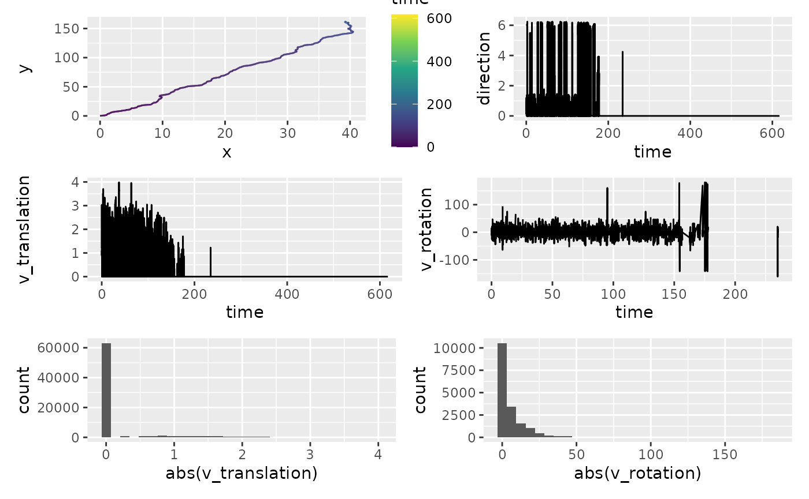
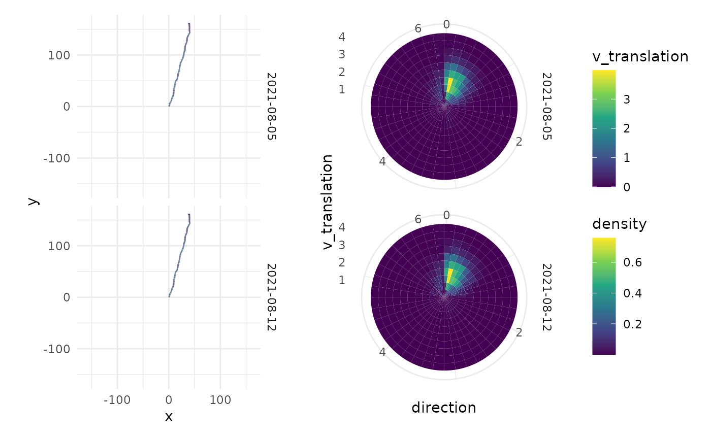

Calculate kinematics
Calculate-kinematics.Rmd
library(animovement)
library(tibble)
library(ggplot2)
library(dplyr, warn.conflicts = FALSE)
library(readxl)
library(here)
#> here() starts at /home/runner/work/animovement/animovement
here::i_am("vignettes/articles/Calculate-kinematics.Rmd")
#> here() starts at /home/runner/work/animovement/animovementCalculate kinematics
When we work with movement data, we are often interested in more than
just where an animal is; we’re interested in how fast it moves,
where it is heading etc. calculate_kinematics calculates a
range of kinematic variables:
-
distance: The distance the animal moved since the last observation (simply calculated using Pythagoras’ theorem) -
v_translation: The translational velocity, like what you see on a speedometer in a car. -
direction: The direction (in radians) the animal is heading - where the arrow on the compass is heading. -
rotation: Difference from direction of the last observation. -
v_rotation: The rotational velocity (in rad/s).
# Augment all data in list
df_kinematics <- df_smooth |>
group_by(id, date) |>
calculate_kinematics()
glimpse(df_kinematics)
#> Rows: 74,078
#> Columns: 11
#> Groups: id, date [2]
#> $ time <dbl> 0.00000000, 0.01666667, 0.03333333, 0.05000000, 0.066666…
#> $ keypoint <chr> "centroid", "centroid", "centroid", "centroid", "centroi…
#> $ x <dbl> NA, NA, NA, 0.002538071, 0.012690355, 0.025380711, 0.038…
#> $ y <dbl> NA, NA, NA, 0.005076142, 0.022842640, 0.060913706, 0.109…
#> $ id <chr> "A100", "A100", "A100", "A100", "A100", "A100", "A100", …
#> $ date <dttm> 2021-08-05, 2021-08-05, 2021-08-05, 2021-08-05, 2021-08…
#> $ distance <dbl> NA, NA, NA, NA, 0.02046258, 0.04013043, 0.04986518, 0.05…
#> $ v_translation <dbl> NA, NA, NA, NA, 1.2277550, 2.4078256, 2.9919111, 3.03424…
#> $ direction <dbl> NA, NA, NA, NA, 0.5191461, 0.3217506, 0.2573237, 0.30587…
#> $ rotation <dbl> NA, NA, NA, NA, NA, -1.973956e-01, -6.442684e-02, 4.8555…
#> $ v_rotation <dbl> NA, NA, NA, NA, NA, -1.184373e+01, -3.865610e+00, 2.9133…Assess kinematics for outliers
Kinematics are much more prone to small values change. We assess these in two ways:
- Visual inspection
- Outlier detection
library(patchwork)
a <- df_kinematics |>
ggplot(aes(x, y, colour = time)) +
geom_path() +
scale_colour_viridis_c()
b <- df_kinematics |>
ggplot(aes(time, direction)) +
geom_line()
c <- df_kinematics |>
ggplot(aes(time, v_translation)) +
geom_line()
d <- df_kinematics |>
filter(v_translation > 0) |>
ggplot(aes(time, v_rotation)) +
geom_line()
e <- df_kinematics |>
ggplot(aes(abs(v_translation))) +
geom_histogram()
f <- df_kinematics |>
ggplot(aes(abs(v_rotation))) +
geom_histogram()
(a + b) / (c + d) / (e + f)
#> Warning: Removed 5 rows containing missing values or values outside the scale range
#> (`geom_path()`).
#> Warning: Removed 8 rows containing missing values or values outside the scale range
#> (`geom_line()`).
#> Warning: Removed 12 rows containing missing values or values outside the scale range
#> (`geom_line()`).
#> Warning: Removed 2 rows containing missing values or values outside the scale range
#> (`geom_line()`).
#> `stat_bin()` using `bins = 30`. Pick better value with `binwidth`.
#> Warning: Removed 12 rows containing non-finite outside the scale range
#> (`stat_bin()`).
#> `stat_bin()` using `bins = 30`. Pick better value with `binwidth`.
#> Warning: Removed 56474 rows containing non-finite outside the scale range
#> (`stat_bin()`).
library(performance)
df_kinematics |>
na.omit() |>
select(rotation) |>
performance::check_outliers()
#> Adding missing grouping variables: `id`, `date`
#> 222 outliers detected: cases 44, 58, 441, 502, 505, 509, 652, 701, 954,
#> 1085, 1189, 1282, 1409, 2101, 2115, 2140, 2264, 2288, 2501, 2718, 2732,
#> 2780, 2781, 2882, 2930, 2989, 3083, 3522, 3589, 3731, 3827, 3850, 3911,
#> 4295, 4310, 4321, 4894, 4900, 4973, 4998, 5258, 5291, 5293, 5534, 5660,
#> 5803, 5890, 6231, 6232, 6480, 6535, 6963, 6968, 6969, 7057, 7058, 7069,
#> 7141, 7275, 7277, 7308, 7353, 7390, 7395, 7405, 7426, 7541, 7675, 7676,
#> 7775, 7788, 7810, 7947, 8001, 8002, 8003, 8250, 8263, 8276, 8335, 8365,
#> 8368, 8369, 8377, 8381, 8383, 8429, 8437, 8438, 8651, 8673, 8678, 8679,
#> 8681, 8682, 8685, 8690, 8703, 8704, 8705, 8711, 8719, 8723, 8732, 8742,
#> 8744, 8745, 8753, 8773, 8777, 8783, 8846, 8860, 9243, 9304, 9307, 9311,
#> 9454, 9503, 9756, 9887, 9991, 10084, 10211, 10903, 10917, 10942, 11066,
#> 11090, 11303, 11520, 11534, 11582, 11583, 11684, 11732, 11791, 11885,
#> 12324, 12391, 12533, 12629, 12652, 12713, 13097, 13112, 13123, 13696,
#> 13702, 13775, 13800, 14060, 14093, 14095, 14336, 14462, 14605, 14692,
#> 15033, 15034, 15282, 15337, 15765, 15770, 15771, 15859, 15860, 15871,
#> 15943, 16077, 16079, 16110, 16155, 16192, 16197, 16207, 16228, 16343,
#> 16477, 16478, 16577, 16590, 16612, 16749, 16803, 16804, 16805, 17052,
#> 17065, 17078, 17137, 17167, 17170, 17171, 17179, 17183, 17185, 17231,
#> 17239, 17240, 17453, 17475, 17480, 17481, 17483, 17484, 17487, 17492,
#> 17505, 17506, 17507, 17513, 17521, 17525, 17534, 17544, 17546, 17547,
#> 17555, 17575, 17579, 17585.
#> - Based on the following method and threshold: mahalanobis (10.828).
#> - For variable: rotation.
pl_direction <- df_kinematics |>
filter(v_translation > 0.2) |>
ggplot(aes(x = direction, y = v_translation)) +
stat_density_2d(
geom = "tile",
aes(fill = after_stat(density)),
n=c(40, 10),
contour = F
) +
scale_fill_viridis_c() +
# scale_fill_gradientn(colours=rev(rainbow(32)[1:23])) +
coord_polar() +
facet_grid(rows = vars(date)) +
theme_minimal()
max_coord <- max(abs(c(df_kinematics$x, df_kinematics$y)), na.rm = TRUE)
pl_path <- df_kinematics |>
ggplot(aes(x, y, colour = v_translation)) +
geom_path() +
coord_fixed() +
scale_x_continuous(limits = c(-max_coord, max_coord)) +
scale_y_continuous(limits = c(-max_coord, max_coord)) +
scale_colour_viridis_c() +
facet_grid(rows = vars(date)) +
theme_minimal()
pl_path + pl_direction +
plot_layout(guides = "collect")
#> Warning: Removed 5 rows containing missing values or values outside the scale range
#> (`geom_path()`).